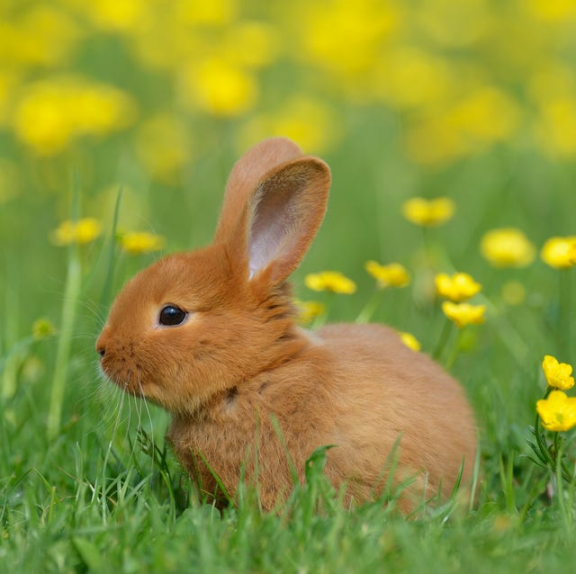
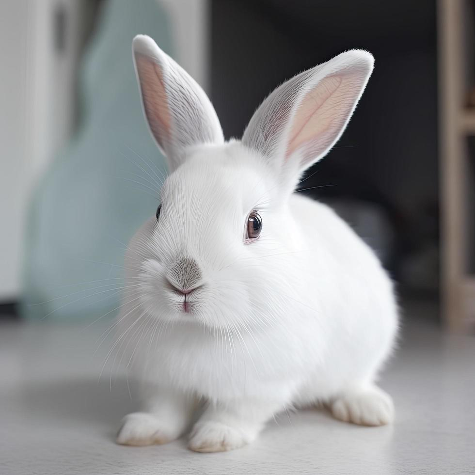
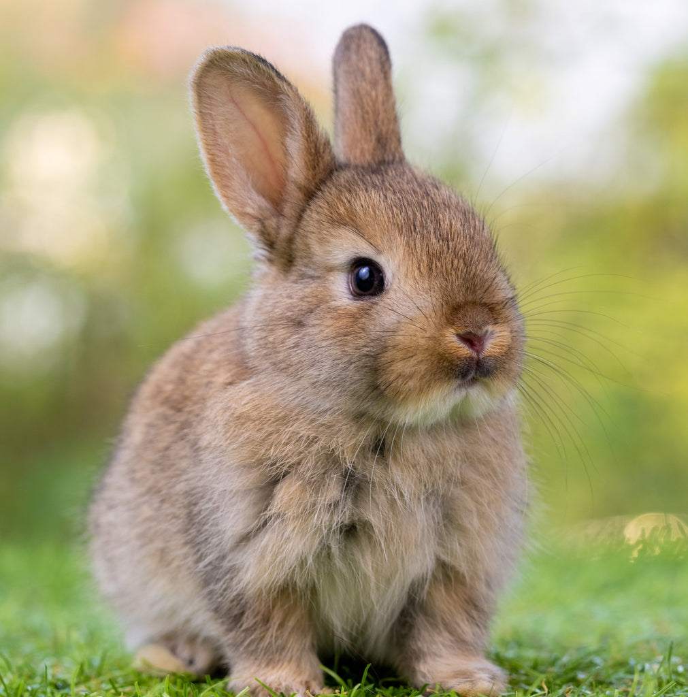
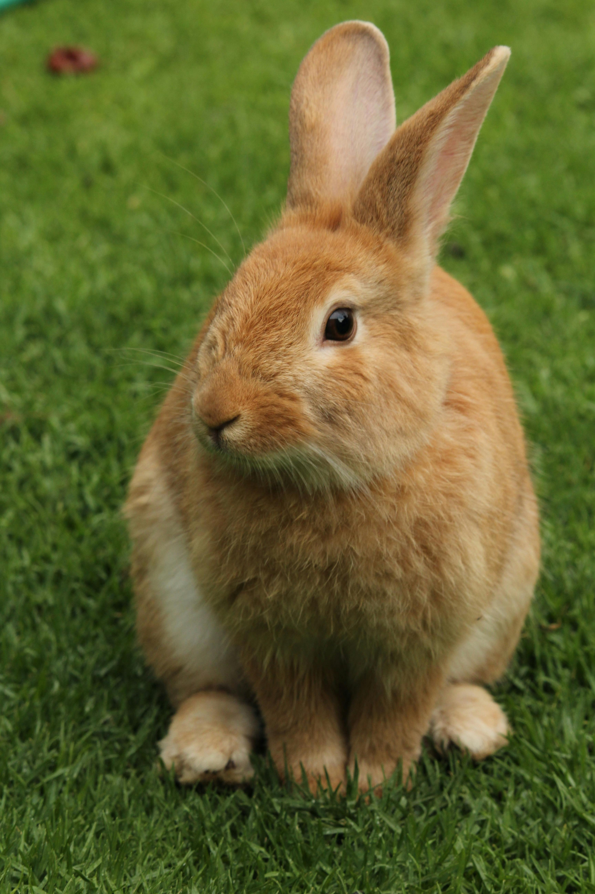

Waydrey
Holland Lop
1 year · Bunny Haven
Calm and affectionate, loves leafy greens and soft blankets.
Adopt Waydrey

Lychee
Lionhead
2 years · Hoppy Hearts Shelter
Beautiful long-haired bunny that enjoys grooming and gentle cuddles.
Adopt Lychee

Milo
Netherland Dwarf
8 months · Paw Pals Rescue
Playful and curious, loves hopping around and munching on carrots.
Adopt Milo.jpg)
Clover
Mini Rex
6 months · Bunny Bliss Shelter
Adorable and shy, perfect for a calm environment with gentle care.
Adopt Clover
Dusty
Flemish Giant
2 years · LoveBuns Shelter
Sweet and loyal, enjoys cuddles and running around the yard.
Adopt Dusty

Waydrey Jr.
English Angora
1.5 years · Rescue Haven
Charming and calm, loves treats and exploring safe open spaces.
Adopt Waydrey Jr.